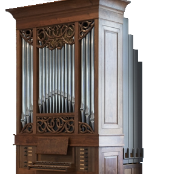

OPUS-6
OPUS-6 ORGAN
OPUS-7
OPUS-7 ORGAN
SANBORN
SANBORN ORGAN

A graduate of Ball State and Miami Universities, Michael Rathke has studied organ with Ruth Wakeland and Lenora McCroskey. He received his early organ building training with Goulding & Wood, Inc. in Indianapolis; he later joined the staff of C.B. Fisk, Inc. in Gloucester, Massachusetts, where he served a formal five-year apprenticeship as well as a further two years as a voicer and tonal finisher.
After completing his Opus 1, he traveled to England to begin a two-year association with Mander Organs of London, where he assisted in the comprehensive refurbishment of the 1871 Willis organ in London's Royal Albert Hall and restoration of the the 1766 George England, Sr. organ at the Danson Mansion in Kent. During this time, he also participated in the tonal finishing of Fisk's landmark instrument in the Cathedrale in Lausanne, Switzerland.
Michael Rathke returned to the U.S. in 2004 to resume organ building under his own name. His focus continues to be the building, restoration, and conservation of fine mechanical-action instruments.